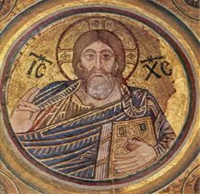
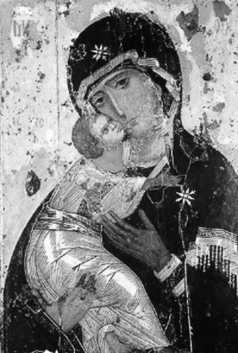
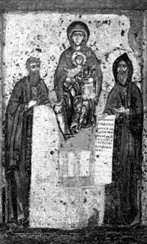
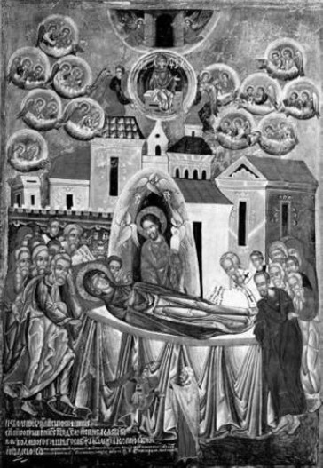
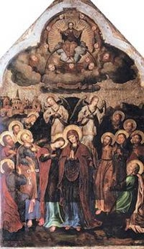

Выравнивание фотографии
Ікони
Ікони
Головна сторінка
Пам'ятники.Скульптури
Мініатюри. Гравюри. Портрети
Памятки давньої історії України
Ікони

Мозаїка Христа Вседержителя із Софійського собору в Києві. Перша половина ХІ ст.

Вишгородська ікона Богородиці:

Свенська ікона Богородиці з Антонієм и Феодосієм Печерський

Ікона «Успіння Богородиці». 1547 р. О. Горошковіч.

Ікона «Вознесіння Христове» з іконопісу церкви Воздвиження Чесного Хреста. Скит Манявський. Й. Кондзелевич.